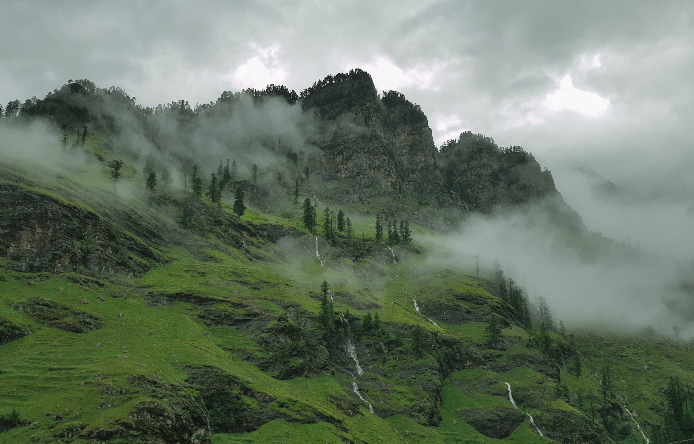

Indore is the most populous and the largest city in the Indian state of Madhya Pradesh. It serves as the headquarters of both Indore District and Indore Division. It is also considered as an education hub of the state and has campuses of both the Indian Institute of Technology and the Indian Institute of Management.[14] Located on the southern edge of Malwa Plateau, at an average altitude of 553 meters (1,814 ft) above sea level,[15] it has the highest elevation among major cities of Central India. The city is 190 km (120 mi) west of the state capital of Bhopal. Indore had a census-estimated 2011 population of 2,994,397 (municipal corporation)[16] and 3,570,295 (urban agglomeration).[8] The city is distributed over a land area of just 530 square kilometres (200 sq mi), making Indore the most densely populated major city in the central province.

Indore traces its roots to its 16th-century founding as a trading hub between the Deccan and Delhi. The city and its surroundings came under Maratha Empire on 18 May 1724 after Peshwa Baji Rao I assumed the full control of Malwa. During the days of the British Raj, Indore State was a 19 Gun Salute (21 locally) princely state (a rare high rank) ruled by the Maratha Holkar dynasty, until they acceded to the Union of India.[17] Indore served as the capital of the Madhya Bharat from 1950 until 1956. Indore's financial district, based in central Indore, functions as the financial capital of Madhya Pradesh and is home to the Madhya Pradesh Stock Exchange.

Indore has been selected as one of the 100 Indian cities to be developed as a smart city under the Smart Cities Mission.[18] It also qualified the first round of Smart Cities Mission and was selected as one of the first twenty cities to be developed as Smart Cities.[19] Indore has been part of Swachh Survekshan since its inception and had ranked 25th in 2016.[20] It has been ranked as India's cleanest city four years in a row as per the Swachh Survekshan for the years 2017, 2018, 2019 and 2020.[21][22][23][24] Meanwhile Indore has also been declared as India's first 'water plus' city under the Swachh Survekshan 2021. Indore became the only Indian city to be selected for International Clean Air Catalyst Programme. The project with cooperation of Indore Municipal Corporation and Madhya Pradesh Pollution Control Board, will be operated for a period of five years to purify the air in the city.
